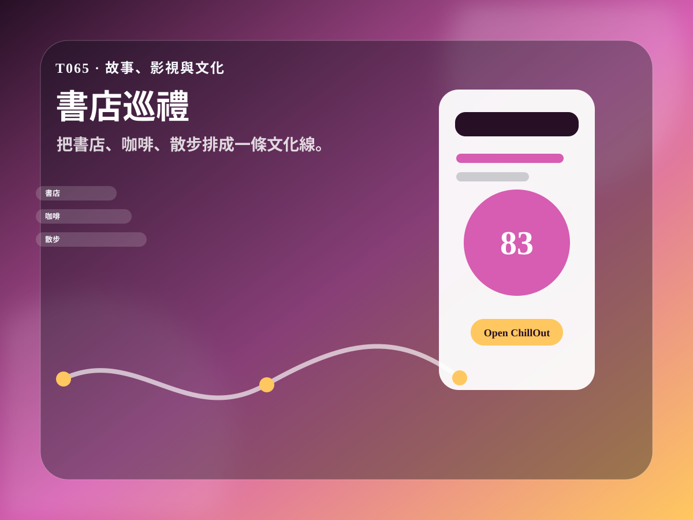

社群鉤子
把測驗結果做成限動、Threads、Dcard 或小紅書圖文，讓使用者願意貼自己的分數。
T065 · 故事、影視與文化
把書店、咖啡、散步排成一條文化線。

玩法
書店控與獨旅者可以在 30 秒內得到一張可分享的結果卡。把書、電影、角色或音樂靈感轉成可走、可拍、可分享的任務。最後把結果丟進 ChillOut 生成完整行程。
把測驗結果做成限動、Threads、Dcard 或小紅書圖文，讓使用者願意貼自己的分數。
結果卡的 prompt 會直接把使用者帶到 ChillOut，下一步就是生成行程、分享手冊或回憶錄。
每個工具都有獨立網址，可單獨投放、做 SEO、找創作者拍短片或加入活動頁。